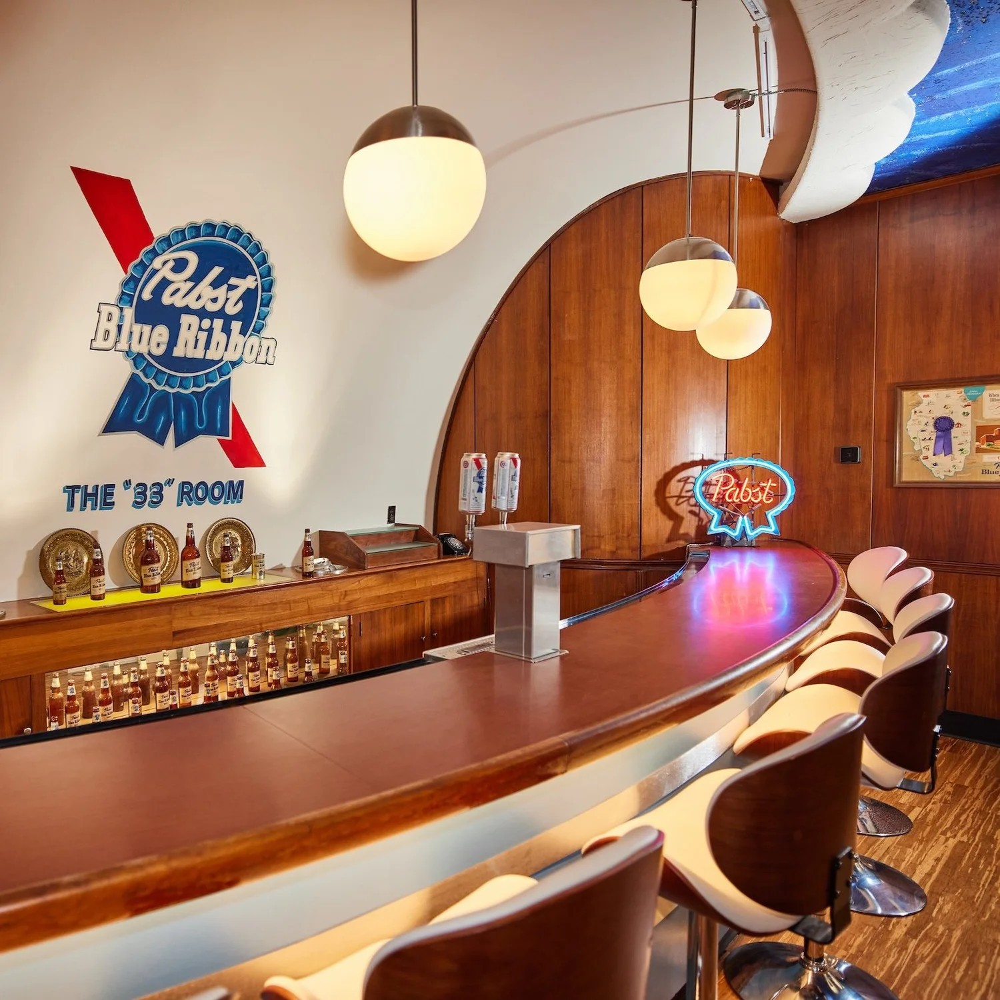
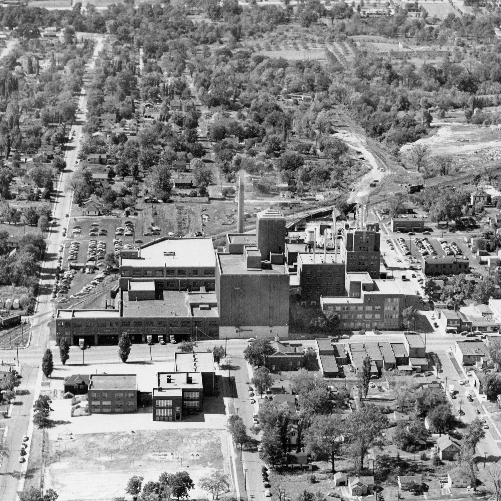
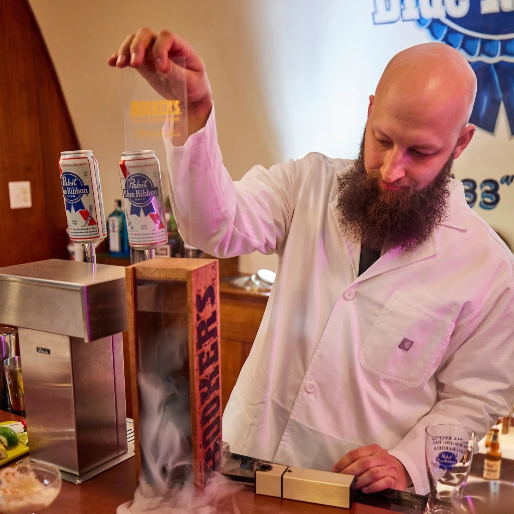

About the 33 Room
Welcome to The Congenial 33 Room at The Old Pabst Brewery in Peoria Heights, Illinois. The 33 Room is the taproom at the former Pabst Brewery in Peoria Heights, Illinois, welcoming you and yours for private rentals, popup events, intimate performances and more.
What'll You Have?

The Room
The 33 Room is the Taproom at the former Pabst Brewery in Peoria Heights, Illinois. The 33 Room, the primary hospitality suite at the Old Pabst Peoria Heights brewery, was dedicated on March 21, 1949, along with the new modernized brew house and new administration building, in week-long celebrations led by the city and Pabst officials. It was proclaimed by then Peoria Heights Mayor Guy Yates and Peoria Mayor Carl Treibel as “Blue Ribbon Week” for the entire Peoria area.
The name The 33 Room was derived from the slogan Pabst used in the 1940’s: “33 Fine Brews Blended into One Great Beer”. Since The 33 Room’s inception, visitors from around the world that toured the brewery were followed by a warm welcome to the comfort of The 33 Room, the headquarters of the Pabst-Peoria hospitality for a tall foaming glass of blendid-spendid Pabst Blue Ribbon! The 33 Room entertained folks from around the world, tapping barrel after barrel of freshly brewed Peoria Heights Pabst Blue Ribbon for 33 years.
Today, The 33 Room, with its original backbar, has reemerged as a hospitality suite, open to the public beginning March 3, 2022, and available for private events and rentals.

The Brewery
Premier-Pabst Corp., later Pabst Brewing Co., was established in 1844 in Milwaukee. Pabst later merged with Premier Malt Products in 1933 at the end of prohibition to build a brewery in Peoria Heights.
Pabst Blue Ribbon Beer and Pabst Blue Ribbon Ale were the first products produced in the brewery. Two years later, tin cans were introduced for the first time, and in 1938, stockholders voted to rename it the Pabst Brewing Company—a nod to the original Pabst outfit. The Heights brewery boomed in the 20-year period from 1958-78, producing as many as 18 million barrels of beer in 1977.
At its peak, the brewery employed 1,000 central Illinois residents. By the time it closed in 1982, Pabst Brewing Company was the fourth largest brewer in the country, with 700 local employees.
Since the Peoria Heights brewery closed, the building has been host to a variety of notable businesses like the OSF HealthCare and Children’s Hospital Foundations and more.

The Drink Slinger
Dustin Crawford is a Midwesterner who has traveled the world, developing a constant hunger to taste new flavors and learn about other cultures. From Turkish Raki and Ecuadorian cuy to Peruvian pisco and Swedish surströmming, learning about flavors and perspectives foreign to his own has become his favorite indulgence.
Aiming for challenges and disciplines to temper this hedonism, he joined the United States Marine Corps and spent five years in the intelligence community with two tours in Afghanistan. He then returned to the Midwest and pursued elevated opportunities behind the bar, diving deep into craft beer and craft cocktails. He soon fell for the art and science of cocktails as a beautiful marriage of the classics with endless opportunities to create something new and wild.
Always learning from pioneers of the craft cocktail boom in major cities around the world, Dustin is honored to bring his own flavors to the burgeoning cocktail scene in the Peoria area as Co-Owner of The 33 Room.